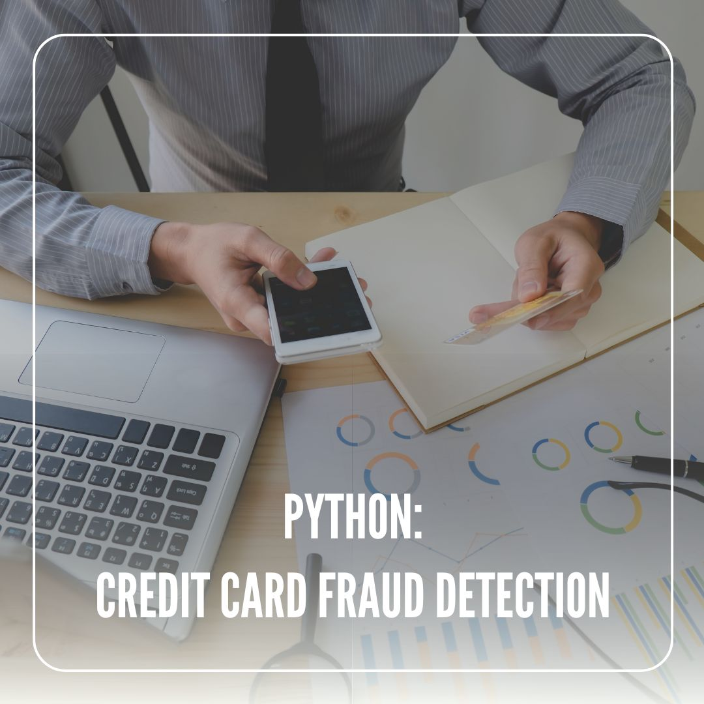
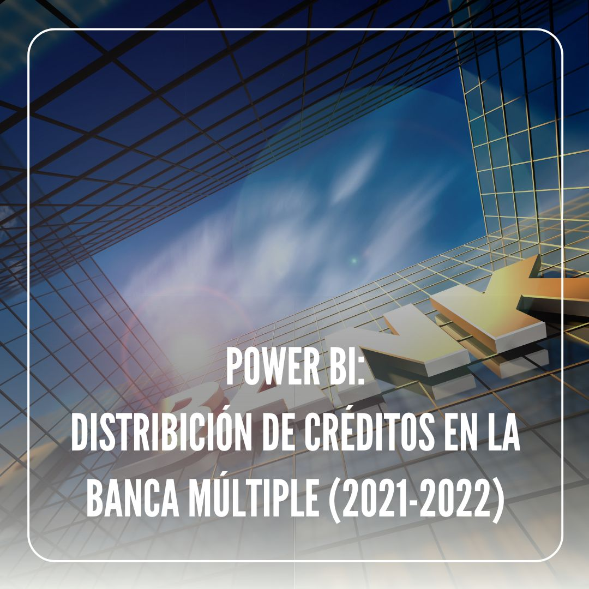
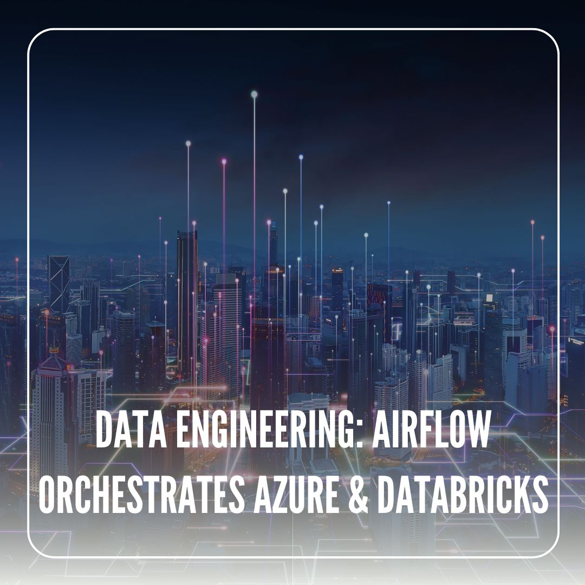
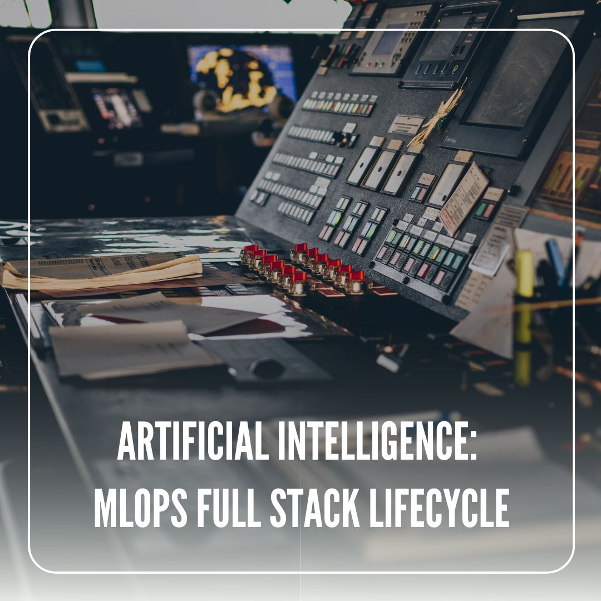
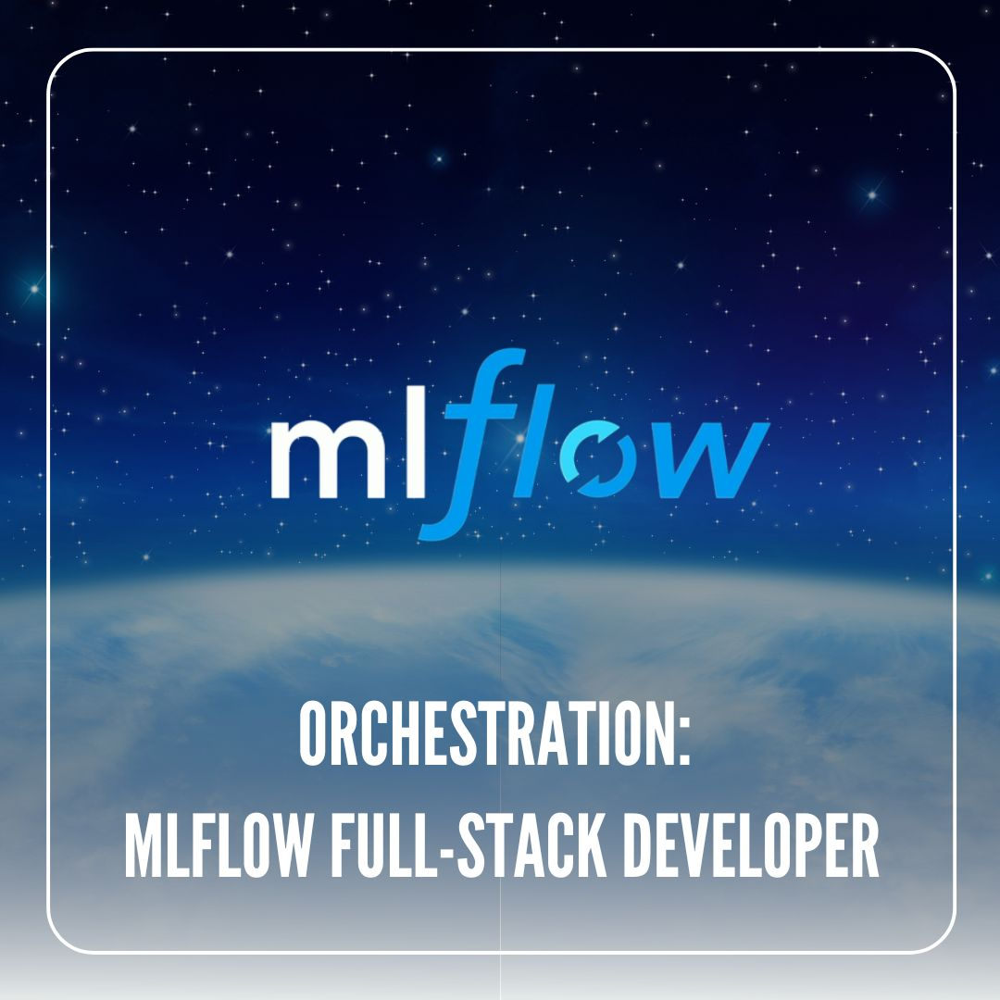
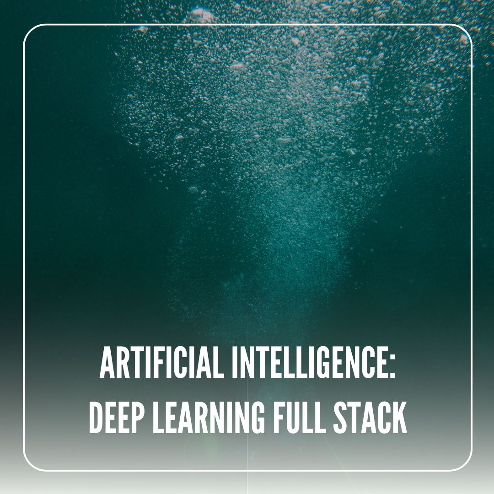

Machine Learning
Modelado supervisado, series de tiempo, detección de fraude y deep learning.
AI Engineer · MLOps · Data Scientist
Del notebook a producción: convierto datos en modelos que se despliegan, se monitorean y mueven el negocio. MLOps, GenAI y analítica.
01 — Sobre mí
Soy economista (PUCP) y magíster en Ciencia de Datos e Inteligencia Artificial (UTEC) y en Estadística Matemática (UNMSM). Hoy trabajo como Machine Learning Engineer en Entel; antes pasé por Pacífico Seguros, donde lideré proyectos de analítica de voz y definí metodologías de MLOps y gobierno de modelos. Combino rigor estadístico con visión de negocio para llevar modelos a producción.
Modelos que se explican y se validan.
Pipelines, orquestación y MLOps.
Formación en economía y finanzas.
Dos maestrías completadas y certificaciones continuas.
02 — Qué hago
Modelado supervisado, series de tiempo, detección de fraude y deep learning.
Orquestación, versionado y despliegue reproducible de modelos.
Asistentes RAG, agentes con LangGraph e ingeniería de prompts.
Pipelines, data lakes y tableros que cuentan la historia de los datos.
03 — Experiencia
Entel Perú · Híbrido
Desarrollo y puesta en producción de soluciones de machine learning.
Pacífico Seguros · Lima
Analítica de datos para el negocio asegurador, dentro del ecosistema de Data & Analytics.
Pacífico Seguros · Lima
Infox · Remoto
Material académico y de investigación sobre coyuntura económica.
Centro Federado de Ciencias Sociales PUCP
Enlace con los estudiantes, redes sociales, publicación del balance económico y edición web.
Económica
Gestión de áreas de la revista, selección, finanzas y marca; automatización de procesos y expansión basada en capital humano.
PUCP · UTEC · UNMSM
04 — Skills
05 — Proyectos

Un clasificador para identificar transacciones fraudulentas en un escenario con clases muy desbalanceadas.
Plataforma educativa para que profesionales de cualquier carrera apliquen IA: cursos prácticos, especializaciones, webinars gratuitos y certificados digitales con QR verificable.
golzrealestate.com ↗ En vivoSitio de una inmobiliaria en Lima y Huaraz con buscador de propiedades y Golz Chat, un asistente legal con IA para el mercado inmobiliario peruano, con planes gratuito y Premium.
rokkanconcret.com ↗ En vivoLanding page para una empresa de dados de cemento (recubrimiento de acero de refuerzo): catálogo con especificaciones, ventajas y formulario de cotización con contacto por WhatsApp.

Reporte interactivo en Power BI.

Data lake y pipelines orquestados.

Ciclo completo de entrenamiento a despliegue.

Ciclo de vida de IA: teoría y código.

Registro, comparación y empaquetado de modelos.

Redes neuronales: teoría y código.

Del análisis exploratorio al modelo final.

Procesamiento distribuido de datos.
06 — Charlas y premios
Primer puesto en el proyecto final de MISTI (MIT) con UTEC.
Charla en INFORMS 2024, comunidad internacional de investigación de operaciones y analítica.
Reconocimiento interno de Pacífico Seguros al mejor científico de datos.
07 — Certificaciones
08 — Preguntas frecuentes
09 — Contacto
¿Tienes un problema de datos, un modelo que llevar a producción o una idea de GenAI? Escríbeme.